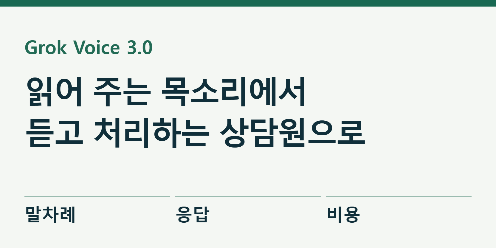
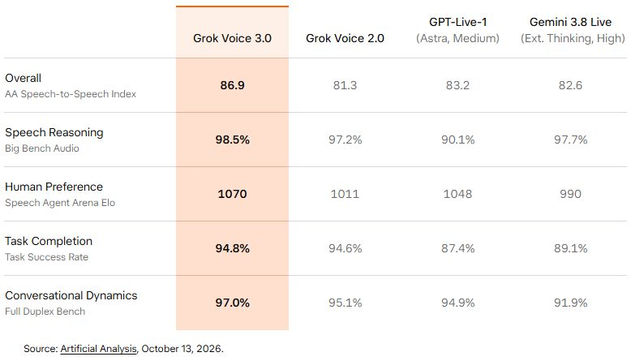

그록은 말을 끊어도 대화를 이어간다
AI 서비스 그록이 10월 14일 공개한 Grok Voice 3.0은 사람의 말을 듣고 음성으로 답하는 대화형 모델이다. 문장을 자연스럽게 읽는 데서 한발 더 나아가, 대화 도중 말을 끊거나 조건을 바꿔도 흐름을 이어가고 필요한 도구를 사용하는 쪽에 초점을 맞췄다. 상담 전화를 받는 AI를 이해하는 데 좋은 사례다.

공식 발표는 빠른 응답과 고객 지원 업무 처리를 주요 변화로 내세운다. 이미 Voice Agent API의 grok-voice-latest를 쓰는 개발자는 새 버전으로 자동 전환됐다고 안내했다. 일반 이용자가 모델 파일을 내려받아 무료로 실행하는 공개 가중치 제품은 아니다.
내레이션을 만드는 AI와 무엇이 다른가
뉴스 영상에 넣을 원고를 읽게 하는 작업은 보통 TTS라고 부른다. 글을 입력하면 음성이 나오는 방식이다. 반면 이 모델의 주된 사용 방식은 사람과 AI가 소리를 주고받는 실시간 대화다. 답변을 다 들은 다음 새 문장을 입력하는 순서만 있는 것이 아니라, 상대가 설명하는 도중에도 “그 날짜 말고 다음 주로요”라고 말할 수 있는 상황을 다룬다.
공식 음성 문서도 대화형 음성, 글을 읽는 음성, 음성을 글로 옮기는 기능을 별도 항목으로 나눈다. 용도와 요금이 다르다. 좋은 목소리를 골랐다고 예약 조회나 배송 변경까지 저절로 되는 것은 아니다. 그런 일을 맡기려면 개발자가 해당 업무 도구와 규칙을 연결해야 한다.
예를 들어 가상의 교육센터 상담을 생각해 보자. 고객이 “토요일 오후 수업을 두 명 예약하고 싶어요”라고 말한 뒤, AI가 답하는 도중 “한 명은 초등학생이에요”라고 덧붙인다. 상담 AI는 앞선 내용을 버리지 않으면서 새 조건을 반영해야 한다. 수업 가능 연령과 빈자리를 확인하고, 최종 인원과 금액을 다시 읽어 주는 것이 목표다. 이 예시는 기능을 설명하기 위한 상황이며 실제 예약 실험 결과는 아니다.

종합 점수와 개별 시험을 나눠 보면
성능은 회사 홍보 문구뿐 아니라 평가 기관의 원자료에서도 확인했다. Artificial Analysis의 음성 대화 평가에서 Grok Voice 3.0의 종합 지수는 86.9, 앞선 2.0은 81.3이다. 이 지수는 음성 추론, 상담 과제, 대화 선호도와 과제 성공 등을 묶어 비교한다. 단순히 목소리가 듣기 좋은지만 평가한 순위가 아니다.
| 항목 | Grok Voice 2.0 | Grok Voice 3.0 |
|---|---|---|
| 음성 대화 종합 지수 | 81.3 | 86.9 |
| 말차례·끼어들기 관련 시험 | 95.1% | 97.0% |
| τ-Voice 상담 과제 | 56.5% | 71.6% |
여기서 말차례 시험은 멈춤, 상대의 말 끊기, 짧은 맞장구 같은 대화 상황을 다룬다. τ-Voice는 항공·소매·통신 상담을 본뜬 과제다. 숫자는 해당 시험에서의 결과이며, 한국어 고객센터에서 같은 성공률이 나온다는 뜻으로 읽으면 안 된다. 이 글에서는 한국어 통화 품질을 직접 시험하지 않았다.
모든 세부 항목에서 경쟁 모델을 이겼다고 소개하는 것도 부정확하다. 같은 평가표에서 Grok Voice 3.0의 τ-Voice는 71.6%, GPT-Live-1의 Astra·Medium 설정은 74.5%다. 전자는 종합 지수가 높지만 이 개별 과제의 점수는 후자가 높다. 종합 1위와 모든 과제 1위는 다른 주장이다. 모델 이름뿐 아니라 비교한 설정과 지표까지 함께 봐야 한다. 원자료는 가능한 경우 3회 평균을 쓰지만, 여기서 비교한 GPT-Live-1 Astra·Medium의 τ-Voice 값은 1회 시험이라고 명시한다. 표본 반복 조건도 동일하다고 가정하면 안 된다.
빠른 응답보다 중요한 마지막 확인
말이 빠르게 돌아오면 기다림은 줄어든다. 그러나 상담에서는 잘못 알아들은 내용을 얼마나 빨리 바로잡는지도 중요하다. “열두 명”을 “열두 시”로 듣거나 “취소하지 마세요”에서 부정을 놓치면 목소리가 아무리 자연스러워도 좋은 서비스가 되기 어렵다. 속도와 업무 정확도를 별도로 기록해야 하는 이유다.
서비스를 시험한다면 쉬운 질문만 열 번 하는 대신 조건이 바뀌는 대화를 넣는 편이 낫다. 날짜를 한 번 바꾸고, 중간에 말을 끊고, 이름을 다시 말하고, 마지막에 금액을 정정해 본다. 그 뒤 대화 요약과 실제 업무 기록이 같은지 대조한다. 이는 편집부가 제안하는 검증 방법이며, 모델이 모두 통과했다고 보고하는 목록은 아니다.
조회와 실행도 나눌 필요가 있다. “가능한 시간을 보여 주세요”는 조회지만 “그 시간으로 결제해 주세요”는 외부 상태를 바꾸는 실행이다. 후자는 대상·금액·수량을 읽어 주고 사람이 확인하는 지점을 두는 편이 안전하다. 모델이 말을 매끄럽게 이어간다는 이유로 이런 확인을 생략할 필요는 없다.
분당 요금이 곧 전체 운영비는 아니다
공식 API 요금표에서 음성 대화 요금은 분당 0.08달러다. 이 단가만 단순 계산하면 10분은 0.80달러다. 다만 요금표에는 텍스트 입력과 도구 사용에 대한 별도 항목도 있다. 전화망, 서버, 업무 시스템 연동까지 포함한 완성형 상담 서비스의 총비용으로 오해하면 안 된다.
사업자라면 “한 시간에 얼마”보다 “문제를 해결한 한 건에 얼마”를 함께 보는 것이 실용적이다. 3분 만에 정확히 끝난 상담과 10분 동안 같은 질문을 반복한 상담은 같은 분당 요금이어도 결과가 다르다. 사람에게 넘긴 비율과 고객이 다시 연락한 횟수도 기록하면, 단순한 음성 사용량보다 운영 상태를 잘 알 수 있다.
기존 모델명에 latest가 들어 있다면 자동 교체가 편리한 만큼 점검도 필요하다. 소개 문구, 고객 이름 읽기, 도구 호출 순서 등 자주 쓰는 짧은 시험을 저장해 두고 모델이 바뀔 때 다시 실행한다. 발표된 평균 성능이 올랐더라도 자기 서비스에서 중요한 동작이 유지되는지는 별도 확인 대상이다.
통화 내용은 어디로 가는가
공식 API 보안 안내는 명시적인 허락 없이 API 입출력을 학습에 쓰지 않는다고 설명한다. 동시에 기본 설정에서는 오남용 감사를 위해 요청과 응답을 암호화해 30일 보관한 뒤 삭제한다고 안내한다. 학습에 사용하지 않는다는 말과 서버에 보관하지 않는다는 말은 구분해야 한다.
처음 도입을 검토할 때 실제 고객의 주소와 주문 내역을 바로 시험 데이터로 쓰지 말자. 가상 고객과 연습 주문으로 기능을 확인하고, 이후 회사의 개인정보 처리 기준에 맞춰 필요한 항목만 연결하는 순서가 적절하다. 계정 설정을 바꾸는 작업과 보관 정책 결정은 담당자가 검토해야 한다.
Grok Voice 3.0의 중요한 변화는 음성 AI 경쟁이 발음과 음색만의 경쟁에서 벗어나고 있다는 점이다. 얼마나 빨리 알아듣고, 대화의 변경 사항을 반영하고, 확인한 일을 정확히 처리하느냐가 함께 평가된다. 한국어 현장에서도 쓸 만한지는 이런 과정을 같은 조건으로 직접 시험해 판단할 일이다.
출처와 더 읽을 자료
- Grok Voice 3.0 공식 발표
- Artificial Analysis 음성 대화 원자료
- Grok 음성 기능 구분과 개발 안내
- Grok API 공식 요금
- API 데이터와 보안 안내
- Grok 공식 브랜드 사용 지침
대표 이미지는 제품명과 기사의 핵심을 편집부가 배치한 설명용 표지이며 실제 제품 화면이 아니다. 본문의 원본 화면·영상은 각 자료 아래에 출처와 제공 주체를 표시했다. 직접 실습하지 않은 회사 시연을 편집부의 실행 결과로 표시하지 않았다.